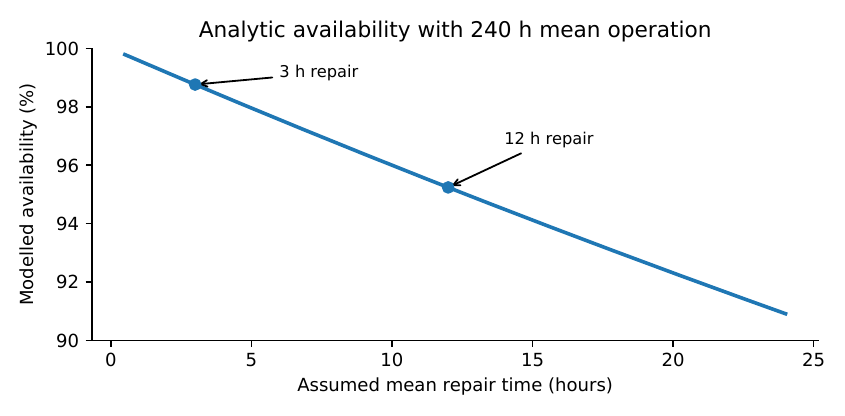

Deployment, Governance and Long-Term Maintenance
A correct prototype can fail after the people who built it leave. Deployment means more than installing code. Someone must own the service, repair failures, protect records, train colleagues and pay for the system next year. This chapter turns a promising prototype into an accountable operational plan, connecting software reliability to human responsibilities and institutional budgets.
The handover on a Monday morning
The district stores team has completed a promising pilot of an offline inventory application. On Monday the person who wrote the program is away. A nurse enters a correction to yesterday’s stock count. The internet disappears. At midday a second device uploads the same order twice. Later a manager asks for the history of who changed the figure. None of these situations is unusual. Each should have been considered before the application became part of routine work.
Chapter Chapter 8 dealt with the ordering decision; Chapter Chapter 9 dealt with whether changing the policy improves outcomes; Chapter Chapter 10 deals with the institution that must continue producing those outcomes. An unreliable institution can defeat a sound mathematical model. Conversely, even an excellent institution cannot compensate for a system whose data are systematically corrupted by duplicate writes.
A deployment plan begins with a basic question: Who is responsible when the system stops working? If the answer is “the developer” and the developer is not employed or contracted to provide support, the institution does not yet have an operational service.
Distinguish building software from operating a service
Chapter Chapter 7 introduced transactions, offline data storage, sync failures and recovery procedures. We use those mechanisms here, but our concern has changed. An engineering test checks whether a duplicate request increments stock twice; a governance review checks who may correct an error, what evidence is retained and who is told if a patient may have been affected. The first is necessary for the second, not a substitute.
| Role | Decision authority | Evidence that the responsibility is functioning |
|---|---|---|
| Service owner | Continue, change, fund or withdraw the service | Signed ownership and escalation process |
| Operational lead | Daily workflow, staff cover, corrected records | Review logs and reconciliation sign-off |
| Technical custodian | Updates, backups, security and recovery | Version log and tested recovery procedure |
| Data steward | Access, quality, retention and permitted use | Data register and access review |
| Safety or domain reviewer | Clinical or other high-stakes decisions | Written rules for override and escalation |
A very small organisation may assign several of these roles to one person, but it should not erase the distinctions. A shared device requires particularly careful access controls: a record made while an account was left logged in cannot be regarded as a reliable attribution of who acted. Where accountability matters, users need separate credentials and the ability to correct rather than silently overwrite past transactions.
Follow a single record through the institution
Consider an inventory adjustment of units. The correct technical implementation inserts a transaction with a unique identifier, authorised user, timestamp, medicine identifier, reason and an auditable link to the previous stock balance. A reconciliation process then checks that
(10.1)
where receipts , issued units , waste , transfers and authorised adjustments are separately recorded. The equation is a conservation check, not a guarantee that each reported event is true. A dishonest or mistaken entry can satisfy arithmetic conservation while misrepresenting the physical medicine.
The workflow therefore includes periodic physical counts, independent review of material discrepancies and a rule for reporting unresolved differences. Transaction idempotence means retrying a committed operation does not repeat its effect. The institution should test this property with the actual synchronisation workflow and store-and-forward devices; see Chapter Chapter 7 and Kleppmann (2017; Gray and Reuter 1992).
Reliability can be measured, not merely described
Saying that software is “robust” does not tell an operator how long a service may be unavailable. A useful first measure is availability: fraction of scheduled service time during which essential functions are usable. Outage frequency and repair time are separately important. A tool that fails once a year for a month can have a similar average unavailability to one that fails briefly every day, while creating very different consequences.
Under an idealised alternating renewal model, let independent operating durations have finite mean and repair durations have finite mean . The long-run fraction of time in the operating state is
(10.2)
If mean time between failures (measured in operating time) is and mean time to restore operation is , this is often written (Ross 2014). This formula is a planning model. A process with long correlated outages, partial functionality or inconsistent definitions requires a more suitable analysis.
Proposition. For , define . Then
At fixed , reducing restoration time always increases modelled availability.
Proof. Differentiate the rational function with respect to each variable. Both denominators are positive, establishing the signs. ◻
Example. Take a deliberately illustrative system with an average of 240 operating hours between failures. If restoration takes 12 hours on average, equation (10.2) gives . If training and local spare equipment reduce restoration to 3 hours, modelled availability rises to . The point is not that either value describes a real clinic. It is that a repair process can be more consequential than another improvement in predictive accuracy.
Average availability does not measure patient harm. A half-hour failure during a vaccination clinic may be more important than a four-hour outage after closing. For a schedule that gives operational consequence per unit of downtime, a simple weighted loss is
(10.3)
The weights must be defined with domain experts; the formula is not a licence to assign money values to patient safety without evidence.

Backup, restoration and recovery objectives
A backup file is not evidence of recoverability. Someone must actually restore it on a different device and verify the result. Specify a recovery point objective (RPO), the maximum tolerable loss of recent data expressed as a time window, and a recovery time objective (RTO), the targeted time to restore essential service. These objectives depend on criticality and resources; writing “zero loss, zero downtime” without architecture and funding that can deliver it is not a plan.
A low-bandwidth service may keep local transaction logs and periodically export protected copies to a separate medium. On recovery, the operator replays validated transactions, rejects duplicate identifiers and reconciles totals. Every recovery exercise should record backup date, software version, number of records restored, missing-record count and who signed off.
Proposition. Suppose a ledger applies a transaction’s stock effect at most once for every unique identifier and stores applied identifiers durably in the same atomic transaction as the stock update. Replaying an already committed transaction with identifier leaves the stock balance unchanged.
Proof. After the first successful atomic commit, the identifier belongs to the durable set of applied identifiers. On replay, the guard sees in that set and performs no additional stock update. Atomicity prevents a committed stock update without its associated identifier record. ◻
The guarantee requires the transactional assumptions. If the stock update and identifier are written in separate, interruptible steps, a power failure between them can invalidate the claim. The difference between an application-level check and a transaction-level guarantee should be visible in the code and tests.
Security begins with a threat model
No amount of encryption is sufficient if shared passwords permit anyone to edit sensitive records without attribution. A threat model asks what must be protected, from whom, by what means, and which failures are most consequential. In the district example, assets may include patient-linked data, procurement records, stock balances, staff credentials and backups. Plausible threats include lost laptops, accidental email disclosure, malicious changes, unauthorised exports, old unpatched devices and privilege misuse.
The classic principles of least privilege, fail-safe defaults and separation of duties give a useful starting point (Saltzer and Schroeder 1975; Standards and Technology 2020). Apply them proportionately: a nurse entering dispensing data should not automatically be able to change supplier payment details; an analyst studying aggregate shortages does not necessarily need patient identities. The required law and policy depend on jurisdiction and institution, so an implementation must obtain local legal review rather than copy a foreign compliance checklist.
Data minimisation and a retention decision
The most secure unnecessary sensitive record is one never collected. Before adding a new field, ask whether a decision truly requires it. A stock-planning model may need aggregate issues by item, date and facility, not individual names. Records should have specified retention periods and lawful access rules. Where disclosure could be harmful, the institution needs a breach-response procedure with named authorities and reporting thresholds that are appropriate to the applicable regime.
An audit trail must itself be protected against unauthorised editing, yet still support legitimate corrections. Record corrections as new events that preserve the earlier entry and the reason for the change. This is operationally more informative than silently replacing yesterday’s value.
People are part of the system design
A service that only its developer understands is fragile. The operator’s manual should use language and examples familiar to the staff, including a short procedure for when no computer or internet is available. Training is not complete when a demonstration has been attended. Ask a staff member who did not build the tool to perform a normal task, make a common mistake, restore an interrupted workflow and explain when the recommendation must be overridden.
Human oversight must be real. A screen asking users to click “approve” without showing the data, uncertainty, consequences and available alternative is not meaningful control. People need time, authority and documentation to question an output. If a pharmacist rejects a suggested reorder quantity because an emergency outreach campaign is coming, the system should support that decision and record the reason. It should not turn a useful override into an opaque deletion of evidence.
Total cost of ownership and the cost of dependence
A donated computer does not make a system free. Write the lifecycle cost over planning horizon as
(10.4)
where is the explicitly chosen discount rate and the amounts have consistent price-year units. This equation does not capture every consequence; training time, procurement delays, vendor migration and opportunity costs may be difficult to measure. Record the exclusions, and include a stress scenario for exchange-rate changes or unexpected equipment replacement.
Example. Consider two invented configurations for three years. Option A uses a 500,000-unit device and requires 280,000 units of annual operations; option B uses a 900,000-unit device but only 150,000 units annually. With a hypothetical annual discount rate of , the present values are
The three-year annuity factor is approximately , giving and . Option A is cheaper in the specified model, despite the higher annual operations budget. If A’s repair costs rise substantially, the comparison may reverse. No claim about actual procurement prices follows from invented numbers.
Costs should be compared under the same service requirements. The cheapest application that frequently loses records may not be an acceptable option. An apparently free proprietary platform that stores the only usable copy of institutional data creates migration costs and bargaining dependence. Prefer documented formats, export rights, clear licences, versioned interfaces and a tested exit path when feasible. Procurement should make ownership of data and responsibility for maintenance explicit.
Adoption and implementation outcomes
An application can be adopted by administrators but rejected in practice. Implementation research distinguishes acceptability, adoption, appropriateness, feasibility, fidelity, cost, penetration and sustainability (Proctor 2011). These dimensions are not interchangeable with health or service outcomes. For instance, high adoption does not prove improved medication availability; low adoption may explain why a technically effective intervention had little measured effect.
| Measure | Operational definition to choose locally |
|---|---|
| Availability | Scheduled service hours usable / scheduled service hours |
| Restoration time | Time from confirmed outage to verified return of essential service |
| Data reconciliation | Proportion of planned stock-count checks completed without unresolved discrepancy |
| Training resilience | Percentage of shifts with at least one staff member able to operate and recover the tool |
| Adoption | Eligible facilities recording specified core transactions in the evaluation window |
| Exception handling | Time and authority used to resolve flagged records or unsafe recommendations |
| Sustainability | Approved next-year budget and identified responsible support staff |
Each indicator needs a denominator and a process for preventing the measurement itself from being gamed. A programme should not report “100% uptime” because it simply stopped logging during power loss.
Preparing for incidents, not hoping they never happen
An incident is an event that threatens availability, integrity, confidentiality or safe decisions. Classify incidents by consequences and urgency rather than by how embarrassing they are. A useful response procedure is to detect and record the problem, preserve relevant logs, protect people and data, contain the failure, restore verified functionality, communicate to affected parties as required, and review why the event occurred.
There must also be a fallback: paper stock cards, an authorised manual reorder procedure, or a safe pause in automated recommendations. Staff should know which tasks can continue when the network, database or model is unavailable. An intervention whose failure prevents any service at all may be worse than the less sophisticated system it replaced.
A controlled change process
When updating code or a forecasting model, record the version, tests, expected data schema and rollback procedure. A model trained with a changed medicine identifier convention could produce plausible but incorrect reorder quantities. For high-consequence rules, a limited release with side-by-side checking can expose mistakes before full use. Do not introduce a new model merely because it scores better on the old training dataset; evaluate the new decision rule against the current workflow, costs and safety conditions (Sculley 2015).
A first-year deployment plan
The service owner can work through four phases. Before rollout: identify the owner, data rights, required clinical approvals, baseline workflow, budget and stop criteria. During a limited launch: train a small number of staff, test failed sync and restoration, reconcile daily balances and record actual workload. During monitored expansion: check whether the intervention still serves its intended decision across facilities, including those with weaker infrastructure. At handover: identify a local custodian, rehearse disaster recovery, secure funding and retain documentation that does not depend on one expert.
The transition from one phase to another should be decided using a written readiness record, not an attractive dashboard. A severe unresolved data-loss defect is a reason to stop expansion even when prediction accuracy looks excellent.
Reproducible laboratory: uptime and restoration
The companion program calculates the analytic availability equation (10.2), runs a seeded illustrative failure-and-repair simulation, evaluates lifecycle budgets and writes a small CSV report. It requires no connection to a real clinic. The script also checks the ledger-replay invariant in a toy transaction list: duplicate identifiers must not change the final balance. An output label describes every result as an assumed or simulated quantity.
A disciplined laboratory report states what was modelled, which model assumptions were tested, which measurements would be required to estimate failure and repair distributions, and what happens when outages are correlated or concentrated during busy hours. Students must not claim that a simulated availability of proves the application will be available of the time in use.
A deployment-readiness record
A one-page readiness sheet should have an answer and a named signatory for each question:
Is there an identified service owner, technical custodian and domain reviewer?
Have normal and exceptional workflows been observed with actual users?
Have offline writes, duplicate uploads, account recovery and power interruption been tested on intended hardware?
Can a backup be restored without the original programmer, and has it been demonstrated?
Are data permissions, retention, exports and breach procedures documented?
Is there an agreed maintenance budget, including staff time and equipment replacement?
Do users have a workable manual fallback and authority to override unsafe recommendations?
Are the baseline and post-deployment outcomes measurable for Chapter Chapter 9’s evaluation?
Are the conditions for stopping, redesigning or replacing the service explicit?
Not all services need identical controls. A library checkout counter and a medicine-dispensing system have different consequences if unavailable. The reasoning is transferable: define the harm, evidence and cost of a possible failure; then choose controls proportionate to it.
Deeper method: a service as a chain of dependent components
An inventory service depends on more than the laptop. The local power supply, database, trained operator, communication link, backup, supplier and clinical process each contribute to whether an order is completed safely. A reliability claim must therefore specify the function that is meant to remain available. “The app opened” is not the same as “a verified order could be placed and reconciled.”
A simple series system with independent components is operational only when every required component is available. If component is available with probability over a specified observation instant, then under the stated independence assumption,
(10.5)
For three independent components with availabilities 0.99, 0.95 and 0.98, this gives approximately . A highly reliable laptop does not guarantee a highly reliable end-to-end service. The calculation also warns against casually multiplying field measurements: shared power, weather and operational policies often cause correlated failures. The independent-component formula is a model to validate, not a licence to invent precision.
Redundancy has conditions
If two independent alternative devices can each deliver the required function and the service is down only when both fail, a simple parallel formula is
Two devices each available of the time would give in this idealised model. But devices in the same locked room may both be inaccessible when the key is lost, and two laptops using the same exhausted battery charging arrangement may both fail during a prolonged outage. Independence and actual failover are essential. A second device that cannot restore current data is not necessarily redundancy for the complete service.
A fallback changes what failure means
Suppose the network is down but local transactions can continue safely and be reconciled later. If the essential function is “record a legitimate stock issue with recoverable integrity,” network failure may not count as service outage. If the essential function is “consult live stock balances from every facility,” the network may be required. One application therefore has different availability measures for different functions. Service definitions should be written from user needs rather than only from the architecture diagram.
Data recovery and the arithmetic of snapshots
A facility may take snapshots every hours. Under a simplistic model where failures occur uniformly relative to the snapshot schedule, the average age of the most recent snapshot at failure is . That is the expected amount of transaction history requiring replay or potentially lost if no durable log exists. The worst-case snapshot age is almost . The result is a planning approximation; real failures may be correlated with operating schedules or power conditions.
If a durable write-ahead log records each committed transaction between snapshots, the amount of recoverable data may be much greater than the snapshot alone. Yet the log must itself survive a power interruption and be restored in the correct order with duplicate protection. A backup strategy should specify both the physical storage locations and the logical recovery sequence.
Example. Under an illustrative 12-hour operating day, a once-daily snapshot made at closing can leave nearly the entire day’s transactions outside the latest snapshot before the next close, if no separate log exists. Hourly snapshots shorten that window but consume more operator time and storage. The correct choice depends on tolerated data loss, recovery time, device cost and whether a reliable transaction log is available. The answer cannot be inferred solely from the price of a memory card.
Governance as an explicit state machine
An institutional service can be described in a small number of states: planned, tested, approved for pilot, limited operation, routine operation, suspended and retired. Moving between states should require evidence. For instance, a tool may move from tested to approved pilot only when the required risk review, local permissions and operator training are complete. It may move from limited to routine operation only after the institution has reviewed usability, reconciliation and observed service outcomes. A serious integrity incident may force suspension regardless of headline accuracy.
This state description is not a novel scientific theory. It is a way to make decision authority and evidence requirements legible. It prevents “the software has passed its unit tests” from being mistaken for “the institution has authorised its use for clinical decisions.”
A sample transition rule
Suppose a pilot can expand only if three conditions hold: the ledger’s reconciliation failure count is zero in the accepted verification period; at least two trained staff members can operate the system without the developer; and the responsible safety reviewer has authorised the workflow. Write the gate as . The point is that failure of any necessary condition prevents expansion. Replacing the conjunction with an average score could hide a severe defect behind good performance elsewhere.
The actual thresholds and evidence requirements must be chosen by the institution with domain expertise. A book can teach how to express and audit a gate; it cannot choose the safe threshold for every service.
An accountability puzzle: the algorithm recommends, the person decides
Consider a stock-order recommendation that appears inadequate to a senior nurse because a vaccination outreach is scheduled next week. If the tool has no field for anticipated events, its recommendation is based on incomplete information. The nurse’s override may be the correct decision. The institutional process should permit a documented adjustment and later review. It should not classify every override as a user failure merely because the model did not predict it.
On the other hand, repeated overrides might reveal a poorly calibrated model, weak training, missing features or external pressure to over-order. The service owner should analyse patterns rather than simply suppress them. The same applies to manual corrections and failed synchronisation: exceptions are signals about how the system meets the world.
Ownership of an open-source tool
Open-source software can reduce licensing barriers and improve inspectability, but it does not eliminate maintenance. Dependencies may have security vulnerabilities; device interfaces and operating systems change; and a public repository may not include training or local support. An institution choosing open-source tools should verify that it can build, test, install, update and recover the exact version it depends on. It should know who is responsible for reviewing upstream changes and how long records must remain readable.
A proprietary service may supply reliable support but introduce vendor dependence and data export risks. Neither category is universally superior. The correct comparison includes lifecycle cost, security, support, migration and the institution’s capacity to understand its own operation.
Training evidence instead of training attendance
Training records often count who attended an orientation session. Attendance is not competence. A better assessment asks a trainee to perform essential tasks while an observer checks accuracy and recovery: create a legitimate record, recognise a malformed value, correct a mistaken entry transparently, respond to loss of connectivity, and explain when to stop using an automated recommendation.
The assessment should be fair to staff with different prior computing experience. Test the system with users who have the least reliable access to technology, not only with the development team. Where necessary, adapt interfaces for local languages and accessible interaction. An effective handbook must teach technology design around people rather than expect people to adapt to every poorly designed interface.
Adoption is not a single event
Diffusion research emphasises that innovations move through social and institutional networks, with perceived advantages, compatibility, trial opportunities and communication affecting adoption (Rogers 2003). A public-sector deployment also depends on procurement cycles, leadership transitions and staff turnover. A positive pilot may be forgotten after a manager moves. A tool may spread rapidly because a donor funds devices but become unused when subscriptions or consumables are due. Those patterns should be monitored as part of sustainability rather than treated as unrelated social issues.
The service owner should ask what happens after the project’s grant ends. A strong answer identifies local funding authority, support capacity, documented data ownership and evidence that the service remains worth maintaining. If those cannot be established, maintaining a limited prototype rather than promising national scale may be the rational decision.
Extended investigation: what an offline clinic system must survive
A small clinic keeps inventory records on two inexpensive laptops. One is used near the dispensing counter and the other in the storeroom. Each laptop can work without internet. Once each day, staff attempt to synchronise with a district server. This is not a hypothetical excuse for poor software quality; it is a real design setting in which local action must continue while communication is uncertain. The test data below are invented, and the design must be assessed against actual hardware before adoption.
Consider an order event , where is a unique event identifier, a local time, an authorised user, a medicine identifier and a signed quantity. An event log can reconstruct the current balance by applying valid events in an agreed order. But the word “valid” matters. Two devices may assign the same local identifier if their schemes are poorly designed. The clocks may differ. One event may correct another; an item may have been transferred before the correction reaches the second device. These problems require explicit semantics rather than a rule that simply keeps the most recently uploaded row.
A simple conflict that cannot be resolved by timestamps
Suppose two offline workers both read a stock balance of 20. The first dispenses 12 units; the second dispenses 10. If each device writes the new balance as an absolute value, one stores eight and the other ten. A last-write-wins synchronisation rule may keep either eight or ten, although the signed events imply a net balance of , indicating that the two offline decisions were not jointly feasible. The correct response is not to accept a negative physical stock silently. The system must expose the over-allocation, reconcile the actual dispensed quantities and decide what the application is allowed to do while disconnected.
If the application requires a single stock-holding authority for each physical store, synchronisation can be simplified by assigning each stock movement to a unique store and imposing rules for offline dispensing. If several devices legitimately update one store at the same time, additional coordination or constrained transaction semantics are necessary. A database may provide local atomicity without providing global serialisability across disconnected devices. The software architect should acknowledge the gap (Kleppmann 2017; Gray and Reuter 1992).
Write an acceptance test for the risky situation
A credible test should perform the following sequence, with the application installed on the intended devices: record a receipt, interrupt power during a write, restart, replay the same upload twice, perform concurrent offline issues, and reconcile the resulting transactions with a signed physical count. Inspect the state after each interruption. Check that no committed record disappears, that duplicate identifiers cannot change the balance, and that unresolved conflicts remain visible until reviewed.
The test should name its limitations. If two staff members physically dispense the same stock to different patients while offline, software cannot retroactively prevent the physical shortage. It may only limit permitted operations, reserve stock, require manual verification, or record and escalate the conflict. Engineering cannot remove the need for an operational rule.
What a service agreement needs to say
A maintenance agreement should not consist only of “contact IT when there is a problem”. It should identify essential functions, support hours, tolerated data loss, escalation contacts and restoration expectations. For a service that can work on paper during outages, the essential availability objective may refer to the ability to dispense safely and later reconcile, not the uptime of the central dashboard. For an emergency system with no safe manual fallback, substantially stricter objectives may be necessary.
A useful service-level record specifies the time window for measurement, what counts as an outage, planned maintenance exemptions, incident severity, who acknowledges an incident and what happens if support is unavailable. Beware of a metric that excludes every difficult interval. A system that never logs failures during blackouts should not be allowed to report perfect availability simply because no data were uploaded.
Reliability is about more than the average
Equation (10.2) is a long-run fraction under a simple renewal model. In reality, repair times may be heavy-tailed: most faults are fixed in minutes, but a rare motherboard failure can disable a device for days. A single mean then conceals relevant risk. Report, where data permit, the frequency of outages, median and upper-tail restoration times, longest outage, proportion of transactions needing reconciliation and fraction of scheduled service time lost.
The modelled expected downtime over an operating window is when a stationary availability approximation is appropriate. For scheduled hours and , the expected downtime is hours. This arithmetic is not a promise about any particular year. The distribution and timing of outages determine whether those hours cause moderate inconvenience or severe disruption.
Repair stock and staff capability as design variables
Suppose a device failure can be restored in three hours if a spare battery or second laptop is available, but in two weeks if replacement hardware must be ordered from another city. The institutional decision is partly a spare-equipment allocation problem. Let be the annualised cost of holding a spare and let denote the probability of a major failure in the planning period. If having the spare reduces the loss from to , a simplistic expected-value calculation favours the spare when . This rule presumes the losses are measured on a defensible common scale. If patient safety or essential service continuity is involved, there may be a mandatory minimum control independent of the monetary comparison.
Training another staff member can produce a similar benefit when failures are human rather than mechanical. A service whose only trained user is frequently absent does not become dependable by purchasing more powerful computers.
A useful procurement evaluation
Procurement teams often compare purchase prices but neglect software lifetime. A more complete evaluation should request the total price for installing and sustaining the service for an agreed period, including device replacement, training, data migration, security updates, helpdesk support, periodic audit and exit. Require a working export of key data to a documented open format, even when proprietary software is chosen. Check whether records can be read after a contract ends.
Four offers that sound similar but are not
Imagine four invented offers: a hosted platform requiring steady connectivity; a single-device offline tool with no synchronisation; an offline-first multi-device tool with expensive integration; and a spreadsheet maintained by one trained clerk. The correct choice depends on data sharing needs, local skills, failure consequences and lifecycle cost. A hosted platform can be excellent where the connection is dependable; a spreadsheet can be sufficient for a very small service; an offline-first design may justify its complexity where disconnected multi-device operation is essential. No product category should be selected simply because it sounds advanced.
The team should run the same practical acceptance scenario for all plausible options. For a stock system, it may require recording a receipt, correcting an error, generating an order, losing internet for a day, restoring power, exporting a backup and reconstructing balances. Compare both the amount of work and the quality of the resulting data.
The annual review is an engineering activity
Long-term sustainability requires a schedule for checking assumptions, not only replacing worn equipment. Medicine usage changes, a new procurement platform changes identifiers, staff join and leave, and an old tablet may no longer receive security patches. An annual review should ask whether the original problem still exists, whether the data retain their meaning, whether the decision rule remains appropriate, and whether the cost is justified by evidence of service performance.
The review can end with one of four decisions: retain with routine maintenance; retain with specified corrections; redesign or revalidate; or decommission with an orderly migration. Decommissioning is not necessarily failure. Sometimes the institution has outgrown the original tool, or the task has become simpler. Responsible design includes making retirement safe.
An accountable withdrawal
If the service must be stopped, export records under the applicable retention rules; document who has received them; revoke credentials; remove unneeded sensitive data from returned devices using appropriate secure methods; and verify that the previous workflow or replacement can perform essential transactions. Inform operators of the change and record where future corrections should go. The aim is to avoid the common outcome in which a “pilot” quietly becomes the only repository of institutional records, then disappears with its developer.
A practical handover demonstration
The final practical exercise in this chapter should be performed by someone other than the original programmer. Ask that person to install the documented application on a clean machine, restore an example dataset, complete five ordinary transactions, recover from a simulated interruption, identify a deliberately corrupted record and export an auditable report. Time the process and record where the manual fails.
A handover succeeds only when the receiving team can demonstrate the specified functions. A signed checklist without an observed restoration is weak evidence. If the software cannot be installed and used without a live call to the developer, the team has uncovered an important dependency before it became a service outage.
Mathematical workshop: reliability, queues and scarce support
Small systems rarely have unlimited technicians or replacement equipment. The right reliability question is therefore partly an allocation problem: how should the institution spend a limited support budget to prevent the most damaging interruptions? A simple model can clarify the trade-offs, provided it does not hide safety requirements.
A repair-time distribution matters
Consider two service options with the same mean restoration time. In the first, repair always takes four hours. In the second, most problems are fixed almost immediately but a small fraction last several days. Their mean can agree while the chance of an extended outage differs sharply. If an essential service cannot tolerate a single multi-day failure, average restoration time is not a sufficient design criterion. A maximum acceptable outage duration, a high quantile of restoration time or a consequence-weighted downtime measure may be more useful.
Define an outage loss function for outage duration . If damage grows faster than duration, for example in a clearly stated hypothetical model, then
Two repair procedures with equal mean but different variances therefore have different expected damage under this model. This does not establish that actual patient harm is quadratic in outage duration. It shows why a service planner must understand the consequence function, not just report mean downtime.
Preventive maintenance as an optimisation decision
Suppose a facility can pay for preventive maintenance that changes expected failure count from to over the planning period, where . If each failure costs an expected in disruption under a defensible loss model, maintenance reduces modelled expected failure loss by . In a simple monetary comparison it is justified when
The assumption that failures are independent of service workload and that their expected consequence is the same is often unrealistic. Use this calculation as a starting point for sensitivity analysis, not a universal procurement rule.
When budgets are scarce, there may be several maintenance actions. Let indicate whether action is purchased, with cost and estimated risk reduction . A basic selection problem is
This is a knapsack-style abstraction. Its additive benefit model neglects interactions: a spare battery and a solar charger may be more valuable together than separately, while two independent backups may have diminishing benefit. Use domain tests to decide whether an additive approximation is suitable.
Capacity and support arrival rates
Suppose an institution has one technician serving several sites. Requests arrive while others are being handled. Under the highly idealised queue with Poisson request arrivals at rate , exponential service times with rate , and , the expected time in the system is
(10.6)
including waiting and service. This model is not necessarily realistic for district support, where travel, priority and spare-part delays complicate the process (Gross et al. 2008; Kleinrock 1975). It nevertheless demonstrates why a nearly saturated technician can cause disproportionately long delays.
Example. In an invented service model, support requests arrive at per working day and the technician can finish an average of per day. Formula equation (10.6) gives one day of expected time in system. If demand rises to requests a day without changing service capacity, the idealised waiting time becomes five days. The dramatic change follows from operating near capacity, not from a mysterious failure of the application. Actual repair durations require measured data and an appropriate queueing model.
This insight can motivate local training: if staff can resolve safe, routine problems without central support, the central technician sees fewer requests. But it would be dangerous to transfer security-sensitive tasks to untrained staff merely to improve a queueing indicator.
A bounded-risk approach to deployment
A useful deployment decision does not rely only on expected cost. For high-consequence functions, require explicit protection against certain events: no silent deletion of committed financial transactions, no unauthorised disclosure of patient identities, no dispensing recommendation when required safety information is missing. These requirements define a feasible set, not just a penalty in an objective function.
A decision model may then minimise lifecycle cost among designs that pass the necessary safety and reliability conditions:
The probability bound is a chance constraint that requires credible failure data or conservative justification. For rare events, a small demonstration may not support a precise estimate of an extremely low probability. Report the evidence behind the constraint, do not fill it with invented decimals.
Recovery exercise with a measurable acceptance test
A small service can demonstrate reliability without an expensive testing platform. Prepare an example database containing a known opening balance, receipts, issues and corrections. Record its checksum and expected reconciliation totals. Run the system on the actual low-cost machine, then deliberately interrupt power during the prescribed test operations. On restart, restore a previously recorded backup, replay the authorised outstanding events and compare the final state to the independently calculated expected state.
A suitable acceptance report records the number of deliberate interruptions, records correctly recovered, duplicates rejected, unresolved conflicts, time to safe service, observer and software version. It must say whether encryption, user authentication and access permissions were also tested. Passing a laboratory test is stronger evidence than merely asserting “offline-ready”, but it is not the same as years of operational reliability.
The service’s security boundary
Sensitive systems fail when nobody can state where trust starts and ends. Draw a data-flow diagram showing the field device, local database, sync server, backups, user credentials, exported reports and any third-party service. For each connection, ask who can read, modify, replay or delete data. A system may encrypt network traffic but leave an unencrypted laptop backup in an unlocked cupboard. The threat model should include such simple failures, not merely advanced attackers.
For a stock-management system, the institution might separate permissions to record an issue, approve a correction, change a supplier and export reports. Privileges should be reviewed when staff leave. Backup copies should be protected with the same care as active data. An offline system is not automatically secure because it is disconnected; a stolen device or malicious removable drive can still expose or corrupt records (Standards and Technology 2020; Saltzer and Schroeder 1975).
A field-ready incident log
A concise incident record includes discovery time, affected function, whether patients or service users were affected, data-integrity status, temporary fallback, responsible person, restoration time, evidence preserved and corrective action. A later review should distinguish immediate cause from contributing conditions. “User error” alone is not a sufficient root-cause analysis if the interface invited a predictable mistake and no recovery path was documented.
A recurring near-miss is valuable evidence. For example, several staff members may almost submit the same order twice after poor connectivity. Even if the idempotence guard prevents duplicate stock reductions, the repeated confusion is a usability problem worth addressing. Reliability includes making correct behaviour easy under actual working conditions.
An operational sustainability experiment
Ask a team that did not develop the program to use its documentation for an entire simulated service day. Give them an intermittent connection, one missing stock count, a supplier correction and a device shutdown. Observe where the written instructions are insufficient and whether the manual fallback preserves essential tasks. Repeat after training and compare the error count and time required. These are genuine measurements of the training exercise if undertaken and recorded, but they remain distinct from actual patient-outcome effects.
Finally, require the service owner to explain the annual budget and how the application would be retired without data loss. If nobody can do so, the technical demonstration is not yet an institutional handover. That conclusion may be uncomfortable, but it prevents a fragile prototype from becoming indispensable without support.
Exercises, failure drills and institutional investigations
Evaluate equation (10.2) for mean operating durations of 90 and 180 hours, with repair time six hours. Explain whether doubling operating time or halving repair time offers a larger modelled benefit.
Explain why an application can report high availability but still be unusable when patients arrive. Construct a time-dependent downtime penalty and compare two outages of equal duration.
Prove Proposition the proposition fails if an identifier is recorded only after the stock balance update. Give an exact failure sequence.
Design an immutable correction ledger for a wrong receipt: list the minimum fields and identify which roles may perform the correction.
Build a backup and restoration drill for a facility without stable internet. Name what must be verified after restoration, rather than merely checking that the backup file exists.
Compare the present values of two service options under annual rates , and . State which conclusions are sensitive to the discount assumption.
Write a threat model for a shared laptop containing aggregate clinic stock data. Include accidental loss, unauthorised exports and denial of service.
Draft a training exercise in which a staff member must reject a model recommendation with an incomplete demand record.
Design a procurement clause that guarantees an authorised institution can export its records and documentation when a vendor contract ends.
Use the companion code to change mean repair duration and document how simulation variation compares with the analytic expected availability.
With a service manager, develop a maintenance plan with annual costs, named responsibilities and a manual fallback. Identify which elements require local verification and which can be taught through simulation.
Decide whether to scale a tool with good model accuracy but frequent untracked manual overrides. What new evidence would change your decision?
What this chapter establishes.
Successful deployment is a durable agreement between people, processes, mathematics and software. A model does not have a maintenance budget or legal responsibility; an institution does. Chapter Chapter 11 tests another limit: will the same working arrangement survive a different country, region or service environment?